In order to create masks to transform the images in later steps, we need to define corresponding points between them. I used a corresopndence tool provided on the course website to select around 30 points on each of the following images of Anne Hathaway and Meryl Streep (The Devil Wears Prada theme) by selecting points around the outline of their faces, around/on their eyes, on their noses, etc. I added corner points into these corresponding points, so that the transformation captures not only their faces, but also the pixels beyond them (background). I used the midpoints between the corresponding points to define a mid-way trigulation. The same trigulation is used for both images, but their position of corresponding points are different. The photos (with the triangulation visualized) are below.
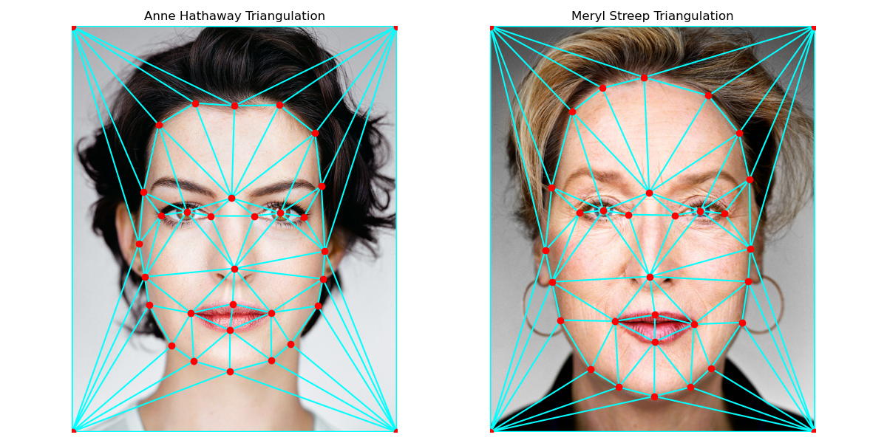In order to calculate the midway face, we need to use the mid-way triangulation as shown above. For each trianlg in the triangulation, we can calculate an affine transformation matrix that can get us from the points in an original image to corresponding ones in the midway geometry. I calculated the affine transformation matrix from setting up a system of equations, using the affine transformation unknowns and the input and output coordinates of the points in a triangle. In an ideal world, we could transform this forward, but then if the transformation gives us a value in between pixels, this would be an issue because we don't have defined intensities. So, it is better to inverse transform this, starting with the mid-way geometry and then landing on the original image. Then, if we land between pixels, we can simply interpolate using the values around (I did nearest neighbor through rounding). Doing this for both images and then averaging the pixel values within the original images, gives the following mid-way image (in center).
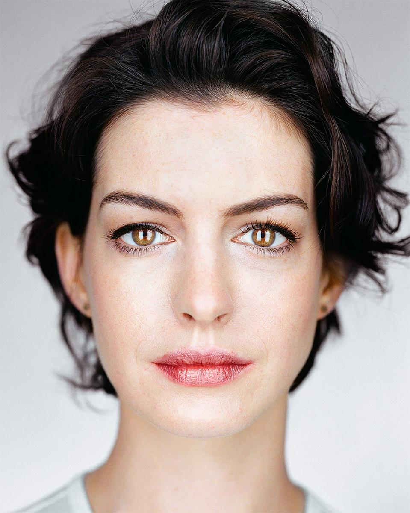 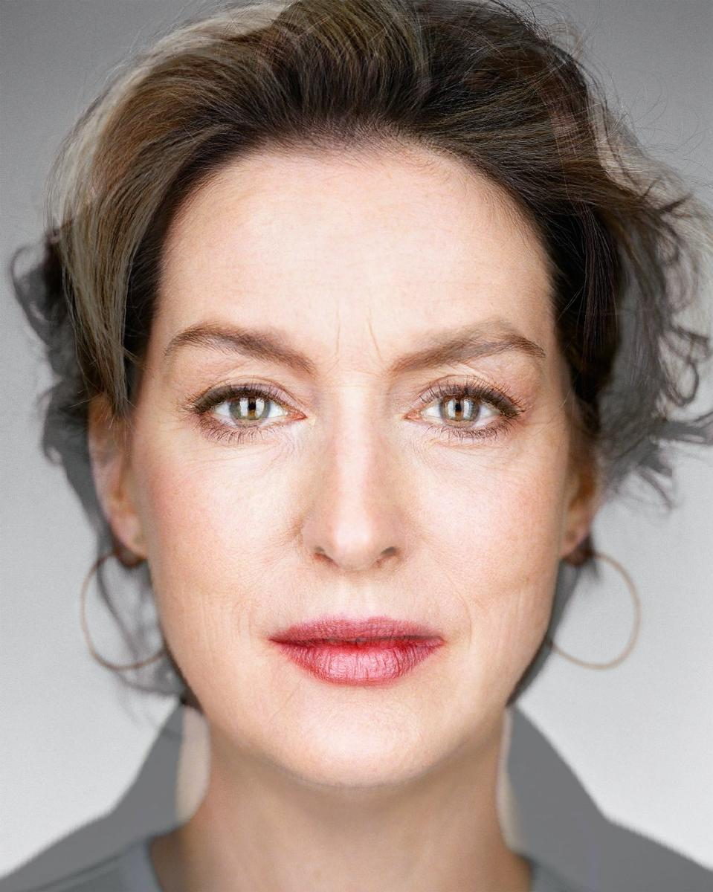 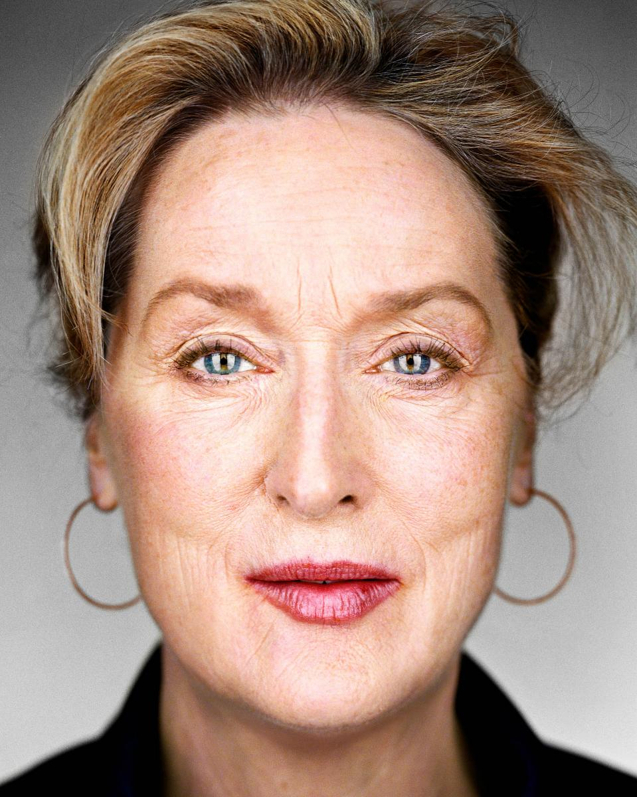In order to morph anne into meryl, we can essentially repeat was was done in the mid-way image (which was a simple average), but this time, over a few frames, take a weighted average using a warp_fraction and a dissolve_fraction. At time step 0, the geometry and pixel values are for image 1. As the warp_fraction increases over the time steps, the geometry to warp to will be more like the second image and as dissolve_fraction increases, the pixel values will become more like image two.
Morphing = Warping + Dissolving
Weighted Avg = (1 - fraction) * image_1 + fraction * image_2
Fraction increases for both morphing and dissolving from timestep 0 till timestep 1.

Here's another morhping example. When my brother had longer hair, people would tell him he looks a bit like Sir Paul McCartney. Doppelganger or no?
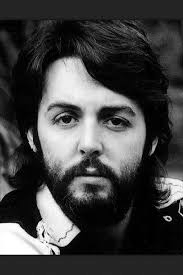Using 200 images of neutral expressions from the FEI annotated human faces database, I averaged all the corresponding points, to obtain the average geometry. The triangulation of these points is visualized below.
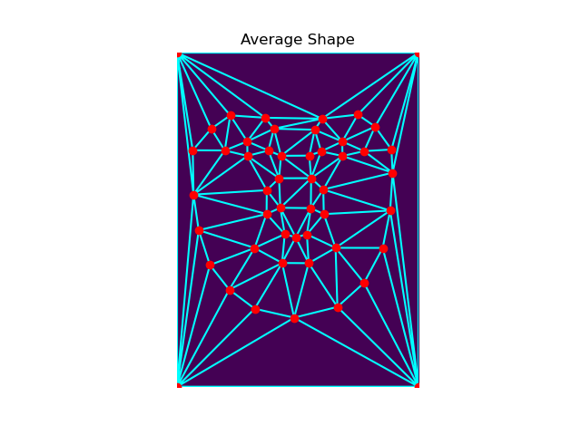Warping faces into this average geometry produces the following results. Here are 6 examples:
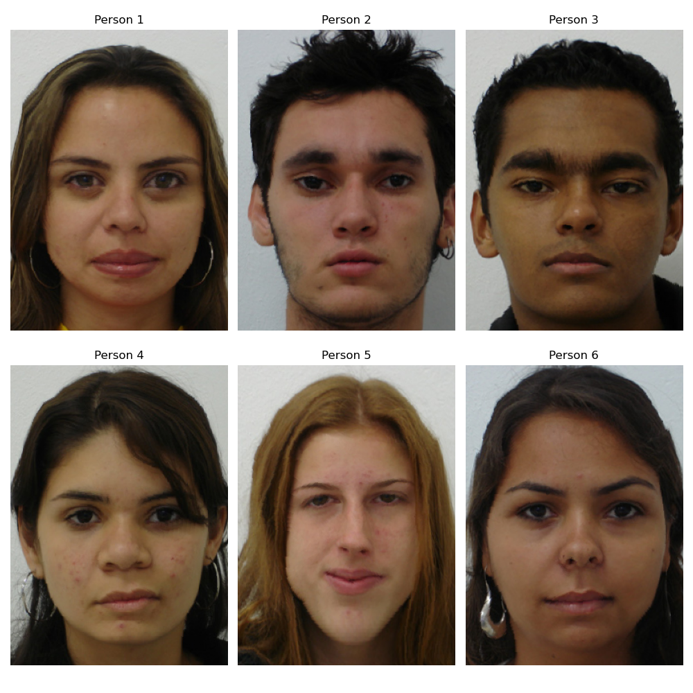Taking all the 200 warped faces and averaging them, produces the following average neutral face:
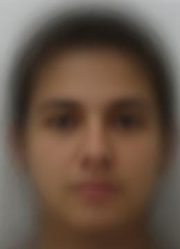
I took a photo of myself and had to resized it a bit to be the same size as the images in the dataset. I then defined new keypoints between my face and the average geometry in order to warp my face to the mean face geometry and the average face geometry to me. Results:
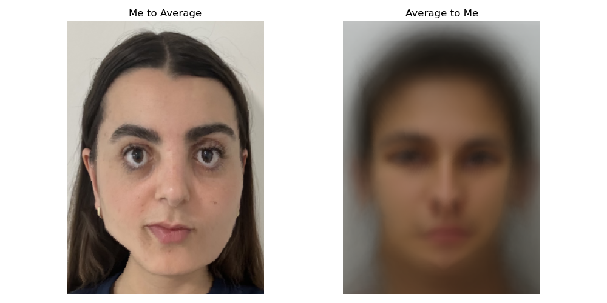Earlier with the equation, (1 - warp_frac) * image_1 + warp_frac * image_2, we are interpolating between geometries. But what if instead we extrapolate? Here, I used values outside the 0 to 1 range for the fraction to extrapolate from the mean population geometry. To be more specific, values less than 0 emphasize my features more and values greater than 1 extrapolate from the population mean, exagerating the population's features. Note, I called the fraction alpha here. Caricatures:
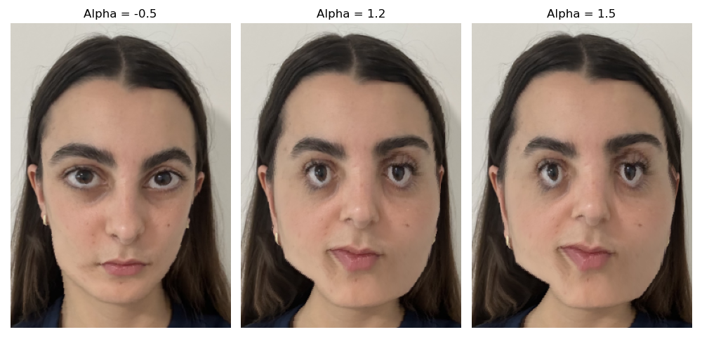My brother (left) a few years ago would get told he looks like Mr. Bean. In fact, one time we were stopped on the street while sightseeing because someone thought he was the actor who plays Mr. Bean, Rowan Atkinson (fun fact: did you know that Rowan Atkinson was an Electrical Engineering PhD student before becoming a full time actor?). I decided to take an older photo of my brother and try to exaggerate the Mr. Bean features based on what we learned. In choosing correspondence points, I made sure to highlight differences in how Mr. Bean's eyebrows are arched and his smile is extended to see if I can replicate those features in my brother. The results to the left show my brother warped to Mr. Bean's geometry, and his eyebrows are more angled but not quite arched. The results to the right show Mr. Bean warped to my brother's geometry, which unlike what I expected, exaggerated his features even more.
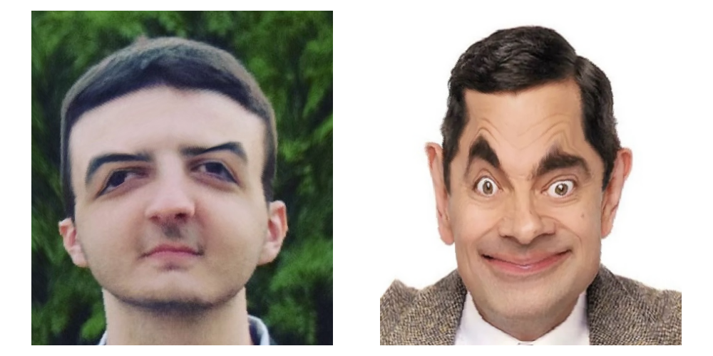Using the morphing algorithm, I created a morphed sequence of myself over time. In order to do this I aligned some photos by my nose using ginput. I only took 10 correspondences between each consecutive pair of images, but this turned out fine. Then, I morphed them as seperate gifs and combined these into a mp4 video. Baby to toddler...elementary school years...middle school...high school, and finally now in college.